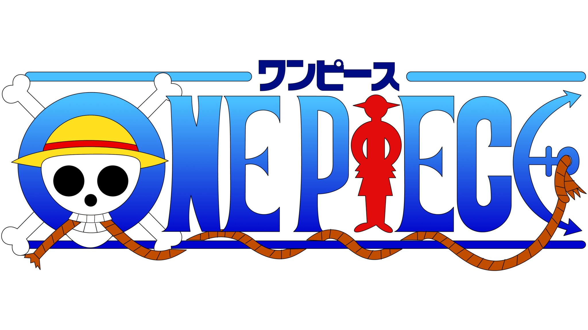

Welcome To The World Of One Piece
Behind every smile, there's a tear. Behind every dream, there's a scar
Set sail with the Straw Hat Pirates across the Grand Line in search of the greatest treasure of all — the One Piece.

Monkey D. Luffy / Strawhat Luffy
The Boy Who Aims to Be King
Captain of the Straw Hat Pirates and the future Pirate King. Luffy is a rubber-powered warrior
with an unbreakable spirit and a heart full of freedom. He values his friends more than his life and fears nothing — not warlords, emperors, or the World Government. With his iconic straw hat and wild grin, he sails the seas chasing dreams, spreading hope, and shaking the world.
After eating the Gomu Gomu no Mi (later revealed as a mythical Zoan fruit), Luffy became a rubber man, turning every battle into wild chaos and creativity.
But what truly defines him isn’t power — it’s his unshakable loyalty, simple heart, and love for freedom. Luffy doesn’t fight for glory or control; he fights to protect his crew, to free the oppressed, and to chase his dreams no matter how impossible they seem.
With a goofy smile, a legendary straw hat, and an unbreakable will, Luffy is the kind of pirate who changes the world — not with fear, but with faith.
What makes Luffy truly special is how he brings people together — turning enemies into allies, and despair into hope. He laughs in the face of danger, cries for his friends, and never lets go of his dream.
He may be silly, reckless, and always hungry…
But when the time comes, he shakes the very foundation of the world.

Roronoa Zoro / Pirate Hunter
He’s not the king. He’s the sword that clears the path for the king.
Roronoa Zoro is the first crewmate to join Luffy and the indestructible swordsman of the Straw Hat Pirates. Known as the Pirate Hunter, Zoro is a master of Three-Sword Style (Santoryu) — wielding one in each hand and one in his mouth.
Driven by a vow to become the World’s Greatest Swordsman, Zoro trains relentlessly and faces even death without flinching. His loyalty to Luffy is unshakable...
If there’s one character who defines loyalty, it’s Zoro. He’s not just the swordsman of the Straw Hat crew — he’s the kind of person who carries the weight of his captain’s dreams like it’s his own. I’ve always admired how he stays
so calm, so focused, even when everything’s falling apart.
Zoro’s dream to become the world’s greatest swordsman isn’t just about being strong — it’s about a promise he made when he was a kid. And he’s never let that go. His training, his pain, the scars he carries.
One of the most powerful moments for me was when he took all of Luffy’s pain during Thriller Bark and just said,
“Nothing happened.”
That moment… it defines who Zoro

Vinsmoke Sanji / Black Leg
Flame That Fights to Protect and Serve
Vinsmoke Sanji — or just Sanji, the cook of the Straw Hat Pirates — is more than a fighter. He’s the heart that feeds the crew, the fire that kicks through injustice, and the gentleman who refuses to let a woman shed a single tear.
He fights with his legs, not his hands — because a cook's hands are sacred. But when he does fight, he burns. His kicks are fire, literally. His resolve? Unshakable. He’s not just powerful — he’s graceful, precise, and full of pride.
What I love about Sanji is how much he hides behind that cool smile and flirtiness. Deep down, he’s someone who’s always sacrificing — for his crew, for strangers, even for the family he once hated. He never wants anyone to go hungry,
because he knows what it's like to starve.
He’s the one who will light a cigarette and walk alone into hell if it means keeping others safe.
Sanji isn’t just the cook. He’s the soul who reminds the crew what it means to care — with fire, flavor, and fierce loyalty. Every dish he serves, every kick he lands — it’s all part of the same vow: to protect those he loves, no matter the cost.

Nami / Cat Burglar
The Thief Who Drew Her Own Freedom and Now Charts the World
Nami is more than just the navigator of the Straw Hat Pirates — she’s their guide, their guardian, and the reason they survive every storm. Once trapped in a world of lies and fear, she grew up stealing to buy freedom, not for herself, but for her village...
she steers her own course
As the brilliant navigator of the Straw Hat Pirates. Behind her sharp tongue and confident smile is a past full of scars, but she never let it break her. With a map in her hand and her crew at her side,
Nami chases freedom — not just for herself, but for every island they pass. She’s not just the one who guides the ship… she’s the heart that keeps it steady through every storm.
She doesn’t need a sword or devil fruit to be powerful.....she never born into freedom — she had to fight
for it, lie for it, cry for it.
She’s not the loudest or the strongest, but her presence holds the crew together in ways that aren’t always obvious. I admire how she’s always calculating, always planning, but still deeply emotional — never afraid to cry, to yell, or to stand her ground.

Usopp / Sniper King
The Sharpshooter Who Hit Targets His Doubt Couldn’t Reach
There’s something about Usopp that just hits differently. Maybe it’s because he’s not the strongest, the fastest, or the most fearless He’s full of self-doubt, he runs when he’s scared, but somehow, he always finds his way back.
Usopp has always felt the most human to me. He’s scared, insecure, and full of doubts — but that’s what makes his growth so powerful. He’s not fearless like Luffy or stoic like Zoro, but when the moment comes, he shows up. He lies, yes — but behind every lie is a dream
he’s desperate to make real. And watching him slowly become the brave warrior he always talked about? That’s what makes him so special. Usopp proves that you don’t have to be the strongest to be a hero — you just have to keep standing, even when you're shaking.
Usopp is the kind of character who grows on you slowly — and then never leaves. At first, he seems like the comic relief, the one who talks big and runs fast. But as you keep watching, you start to see the cracks in his voice, the pain behind the lies, and the strength in
every shaky step he takes forward. What I love most about Usopp is his imagination — how he uses stories not just to escape, but to survive. He’s a storyteller, a sharpshooter, and a soft heart all in one.
You can hate or not like him all you want — call him weak, call him a coward — but you’re missing the point. Usopp’s strength isn’t in brute force and that is what makes him powerful in a way that’s deeply human.

Tony Tony chopper / Cotton Candy Lover
The Doctor Who Believed in People, Even When They Didn’t Believe in Him
Chopper is honestly one of the most precious characters to me. He’s not just the adorable one in the crew — he’s a reminder of how painful it is to be different and how brave it is to still open your heart. He was once called a monster by everyone, and still, he chose to save lives.
That says everything about who he is.
I love how shy he gets when someone praises him, but when it’s time to protect or heal, he transforms. It’s beautiful how someone so small can carry so much responsibility — not just as a doctor, but as someone who genuinely cares for everyone around him.
There’s something about Chopper that makes me emotional every time. Maybe it’s because he just wants to be accepted. He works so hard to be useful, to be strong, to be part of the crew. And the fact that he once saw himself as a monster breaks my heart… because now, we all see him as family.
Chopper’s story always hits a soft spot for me. Imagine being called a monster just for existing — and then having to build yourself back up from that. He did that. He found hope in Dr. Hiriluk, he chose a dream, and he walked a path full of pain to become someone who saves others.

Nico Robin / Demon Child
The Scholar Who Found Something Worth Protecting
Born into a world that feared knowledge more than war, Nico Robin grew up with a bounty on her head simply for wanting to read. Labeled a demon for seeking the lost history of the world, she walked a lonely path filled with betrayal, loss, and silence. But beneath her calm voice and quiet smile is a survivor—a woman
who chose not just to live, but to live with purpose.
For so long, Robin thought she was cursed to be alone. Everywhere she went, betrayal followed. Every kindness felt like a trick. But in the Straw Hats, she found something terrifying—genuine care. They didn’t want to use her; they wanted to understand her. And when she finally cried out to live, it wasn’t just a cry of
desperation—it was a promise. To herself. To them. To history itself.
She carried Ohara’s will across oceans and decades, bearing the weight of a forgotten world on fragile shoulders. And though she once walked alone, she now stands with a crew that defends not just her life, but her truth.
or most of her life, kindness was a risk, and attachment a trap. She moved through the world as a shadow, wielding knowledge like a weapon and solitude like armor. But then came a crew that didn’t ask her to be useful—they just wanted her to stay. Her strength wasn’t just a shield—it became a gift, not out of fear, but out of love she wants to protect her nakama.

Franky / Cyborgy
Shipwright Who Built Himself Strong Enough to Carry His Friends’ Dreams
Franky was once a boy who built weapons and paid the price for it. Cast aside, broken, and alone, he rebuilt his body with steel and fire—but it was his heart that stayed strongest. For years, he hid his pain behind loud laughs and louder punches. But under the sunglasses and cola-powered bravado
is a man who never forgot his mentor’s words: that a shipwright’s pride is the crew who sails his ship. Franky didn’t just build the Thousand Sunny—he built a home for the people who gave him a reason to be more than just strong.
He became a brother, a protector, and proof that being “super” isn’t about upgrades—it’s about who you fight for...He made himself a cyborg not just to survive, but to stand tall for those who couldn’t. Now, every punch he throws and every laugh he bellows is powered by something stronger than cola: conviction.
Tom gave Franky more than blueprints—he gave him a purpose. Even after loss and exile, Franky never forgot what it meant to be proud of what you build. When he laid the keel of the Thousand Sunny, he wasn’t just fulfilling a dream—he was fulfilling a promise. Every inch of that ship carries Tom’s spirit, and every time it sails, Franky proves that the values passed to him—strength,
love, and freedom—were never lost. He didn’t just inherit a craft; he inherited a legacy, and made it super.
He didn’t just build the Thousand Sunny to survive the Grand Line—he built it to carry freedom. And that’s what he chose to chase, too.

Brook / Soul King
The Musician Who Laughed Through Death, and Brought Life to the Sea
Brook? Man, he's way more than just the skeleton with a cane and a joke. Like yeah, he's funny and always asking to see panties, but deep down? That dude's been through pain most people couldn't survive. He lost everything—his crew, his body, 50 years of his life—and still came back smiling, still singing
He carries all that sadness with style, with music, with heart. He’s the soul of the crew in more ways than one, and when it counts, he’s clutch. One For All..
Remember how he stood up to Big Mom for that copy of the Poneglyph? Dude was fearless He is the MVP of the arc.
Brook reminds me that even after death, after losing everything, One of the coldest under pressure. Like, he’s a walking skeleton with a cane, but when it’s time to throw down, he’s slicing through souls and walking away like it’s nothing. He’s got that old-school gentleman energy, but he’s still a total rockstar.
The way he holds onto his past, his crew, Laboon—he’s all heart underneath the bones. He’s been through hell and still managed to bring joy with his music. That’s powerful.
you can still laugh, still fight, and still care about people with everything you’ve got. Yohohoho!

Jinbe / First Son of the Sea
The Warrior Who Fought So His People Wouldn’t Have To
Jinbe is a warrior of the sea, but more than that—he is a bridge between oceans divided by hate. Born a fish-man in a world that feared and oppressed his kind, he rose not through violence, but through dignity, honor, and unshakable loyalty.
Jinbe has stood beside emperors, pirates, and kings—but he has never bowed to anyone who stood in the way of what’s right. A former Warlord, a former rebel, and now a Straw Hat, he has lived many lives, but never once abandoned his ideals. He believes in peace, but he is not soft. He believes in unity, but he
knows the scars that history leaves behind.
He once fought for revenge, then for justice, and finally for peace. With every decision, he sought a world where his people could live without chains. Now, as the helmsman of the Thousand Sunny, he doesn't just guide the ship—he steers the future. A man of few words and deep wisdom,
Jinbe proves that true strength lies in knowing when to fight—and when to forgive.
he chose instead to sail under the flag of the one man who treated everyone as equal: Monkey D. Luffy. To Jinbe, loyalty is not about race or history—it’s about will. He doesn’t abandon his people; he uplifts them.